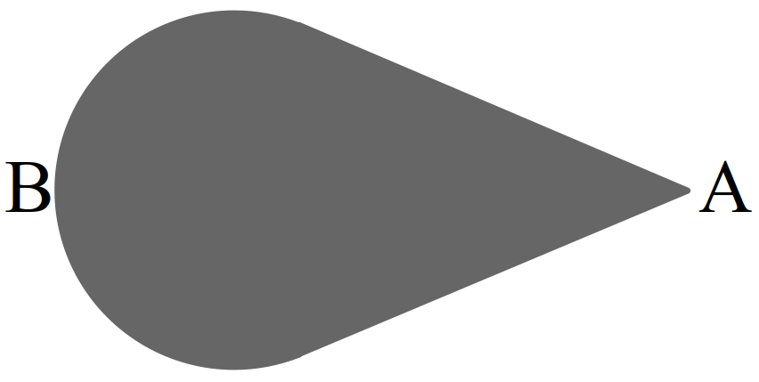

توزیع بار الکتریکی در اجسام رسانا
تعریف 16 توزیع بار در اجسام:
- اگر بار اضافه به اجسام نارسا دهیم، بار در محل تماس باقی میماند و پخش نمیشود.
- اما در اجسام رسانا بار اضافه روی سطح جسم رسانا پخش میشود.
- اگر در سطح داخلی رسانا تماس دهیم، بار به سمت سطح خارجی رسانا آن پخش میشود.
- پتانسیل الکتریکی در تمام نقاط رسانا یکسان است.
- اجسام رسانای متصل از نظر پتانسیل باهم برابر هستند.
- تراکم بار در نقاط تیزتر سطح یک جسم رسانای باردار بیشتر است.
شکل 28: آزمایش فاراده
شکل 29: تراکم بار در نقاط تیزتر سطح یک جسم رسانای باردار بیشتر است.
نکته. بار و میدان درون یک جسم رسانا صفر است.
مثال 48 کدام جمله در مورد یک رسانا منزوی صحیح نیست؟
- بار در سطح خارجی پخش میشود.
- پتانسیل الکتریکی در نقاط نک تیز بیشتر است.
- بردار میدان عمود بر سطح رسانا میباشد.
- میدان و بار درون رسانا صفر است.
نمایش پاسخ
گزینه ۲مثال 49 کدام گزینه در مورد جسم باردار شکل مقابل صحیح است؟

- پتانسیل الکتریکی و میدان الکتریکی در دو نقطه \(A\) و \(B\) یکسان است.
- پتانسیل الکتریکی نقطه \(A\) بیشتر از نقطه \(B\) است.
- پتانسیل الکتریکی دو نقطه \(A\) و \(B\) برابر و میدان در نقطه \(A\) بیشتر از نقطه \(B\) است.
- با اتصال دو نقطه \(A\) و \(B\) بار الکتریکی از \(A\) به \(B\) منتقل میشود.
نمایش پاسخ
گزینه ۳تعریف 17 چگالی سطحی بار:
\[ \sigma = \frac{q}{A} \]
تعریف 18 رابطه مقایسهای چگالی سطحی:
\[ \frac{\sigma'}{\sigma} = \frac{q'}{q} \times \frac{A}{A'} \]
مثال 50 چگالی سطحی دو کره رسانا با شعاع \(r\) و \(3r\) برابر هم میباشند،بار الکتریکی کرهی بزرگتر چند برابر بار الکتریکی کره کوچکتر است؟
- \(9\)
- \(3\)
- \(9\sqrt{3}\)
- \(3\sqrt{2}\)
نمایش پاسخ
\[ \require{cancel} \begin{aligned} \frac{\sigma'}{\sigma} & = \frac{q'}{q} \times \frac{A}{A'} \\ 1 & = \frac{q'}{q} \times \frac{4 \pi r^2}{4 \pi r'^2} \\ (\frac{r'}{r})^2 & = \frac{q'}{q} \\ \frac{q'}{q} & = (3)^2 = 9 \end{aligned} \]مثال 51 کره رسانایی به شعاع \(10cm\) و دارای چگالی سطحی بار \(160 \mu \frac{C}{m^2}\) است. اگر این کره با سیم به زمین وصل شود چه تعداد الکترون بین زمین و کره مبادله میشود. \(e = 1.6 \times 10^{-19}C\)
- \(1.2 \times 10^{3}\)
- \(1.2 \times 10^{14}\)
- \(1.2 \times 10^{17}\)
- \(1.2 \times 10^{19}\)